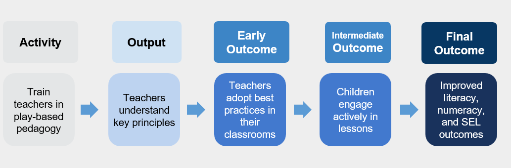

Theory of Change
How to develop a robust Theory of Change, linking program activities to outcomes through evidence-based pathways.
- A Theory of Change maps how program activities lead to intended outcomes through clear, logical pathways
- Strong ToCs must be active (specific actions), clear (distinct components), logical (causal relationships), and detailed (sufficient for M&E)
- Every ToC pathway relies on explicit assumptions and risks that need monitoring and validation
What is a Theory of Change?
A Theory of Change (ToC) is a comprehensive description and illustration of how and why a desired change is expected to happen in a particular context. It maps out the logical sequence from activities to outputs to outcomes to impact, making explicit the assumptions underlying each link in the causal chain.
Visual vs. Narrative Representation
A ToC can be presented as:
- Visual diagram: Shows the causal pathways through boxes and arrows
- Narrative description: Written explanation of the change process
- Combination: Visual diagram with accompanying narrative (most effective)
The visual representation helps stakeholders quickly grasp the overall logic, while the narrative provides essential detail about mechanisms and assumptions.
Purpose and Benefits
Communication: Provides a clear, concise way to explain your program to stakeholders
Alignment: Creates shared understanding among team members about goals and strategies
Learning Framework: Identifies what to monitor and evaluate at each stage
Adaptation: Highlights assumptions to test and refine through implementation
Components of a Theory of Change
A comprehensive ToC consists of five key components that form a logical chain from implementation to impact.
The Five Essential Components
Definition: The specific actions your organization implements
Characteristics:
- Use active verbs (train, provide, deliver, organize)
- Specify who does what
- Exclude internal processes (e.g., planning, procurement)
Example: “Deliver 10 business skills training sessions to caregivers” NOT “Support caregivers”
Definition: The direct products of activities
Characteristics:
- Immediately measurable
- Under direct control of the program
- One output per activity
Example: “Caregivers attend and complete 10 training sessions”
Definition: Short-term changes in participants
Types of changes:
- Knowledge
- Attitudes
- Beliefs
- Behaviors (sometimes)
Measurement: During or immediately after implementation Attribution: Directly attributable to program activities
Definition: Medium to long-term changes resulting from initial outcomes
Characteristics:
- May be influenced by external factors
- Require initial outcomes to be achieved first
- Need experimental methods to measure causality
Example: “Caregivers apply business skills to increase income”
Definition: Long-term goals of the program
Characteristics:
- Ultimate changes in beneficiaries’ lives
- Influenced by multiple factors beyond the program
- Require rigorous evaluation to establish attribution
Example: “Improved economic stability and wellbeing of families”
Visual Representation

Characteristics of a Strong Theory of Change
The Four Essential Qualities
Activities use specific action verbs:
- ✅ Good: “Train 20 facilitators in child development”
- ❌ Weak: “Support child development”
Focus on what the organization does, not internal processes
Each component is distinct and specific:
- Same level of detail across components
- One output per activity
- No overlapping elements
All aspects of the program are represented
Arrows represent causal relationships, not chronology:
- Each link shows how one element causes the next
- The pathway makes sense conceptually
- No logical leaps or missing steps
Example:
- Logical: Training → Increased knowledge → Applied skills → Higher income
- Not logical: Training → Higher income (missing intermediate steps)
Sufficient detail for monitoring and evaluation:
- Distinguishes between initial and intermediate outcomes
- Includes all necessary steps in the causal chain
- Specific enough to guide measurement
Helps identify:
- What outputs to monitor during implementation
- Which outcomes to measure at different stages
- When to conduct evaluations
Assumptions and Risks
Every arrow in a Theory of Change represents assumptions about how change happens. Making these explicit is crucial for learning and adaptation.
Understanding Assumptions
Definition: Conditions that must hold true for the causal pathway to work
Examples:
- Participants will attend sessions if scheduled conveniently
- New knowledge will be retained and applied
- Market conditions will remain stable enough for businesses to grow
Why they matter: Unmet assumptions can break the causal chain
Identifying and Managing Risks
Risk: A specific threat to an assumption being met
Examples of improving risk specification:
| Weak Risk Statement | Strong Risk Statement |
|---|---|
| “Low attendance” | “Work schedules prevent 40% of participants from attending morning sessions” |
| “Content not relevant” | “60% of business curriculum doesn’t match local market conditions” |
| “No behavior change” | “Social norms discourage women from starting businesses independently” |
Prioritizing Risks
Focus learning efforts on risks that are both:
- Important: Would significantly impact success if they occur
- Uncertain: Limited evidence about likelihood or mitigation strategies
Priority quadrants:
- High importance + High uncertainty = Priority for testing
- High importance + Low uncertainty = Standard mitigation
- Low importance + High uncertainty = Monitor only
- Low importance + Low uncertainty = Acknowledge but don’t focus
Learning Approaches
Different methods help test assumptions and understand risks at various stages of implementation.
- When to use: Before full implementation
- Purpose: Test feasibility and refine approach
- Methods: Small-scale implementation with intensive monitoring
- Example: Test training curriculum with 2-3 groups before scaling
- When to use: Any stage, especially for understanding “why”
- Purpose: Explore perceptions, motivations, and barriers
- Methods: Facilitated group discussions
- Example: Understand why attendance is lower than expected
- When to use: During implementation
- Purpose: Track outputs and early outcomes
- Methods: Analyze program records and monitoring data
- Example: Review attendance records to identify patterns
- When to use: Design phase or when facing specific challenges
- Purpose: Leverage specialized knowledge
- Methods: Interviews or advisory meetings
- Example: Consult labor economists about local market conditions
Using Theory of Change for Monitoring and Evaluation
Monitoring Focus
Outputs and Initial Outcomes are the focus of monitoring because:
- They’re under program control
- Directly attributable to activities
- Provide real-time feedback for improvement
Key indicators:
- Participation rates
- Completion rates
- Quality measures
- Immediate knowledge/attitude changes
Evaluation Focus
Intermediate and Final Outcomes require evaluation because:
- External factors may influence them
- Attribution needs to be established
- Longer time horizons are involved
Methods:
- Experimental designs (RCTs)
- Quasi-experimental approaches
- Mixed methods to understand mechanisms
IPA’s Right-Fit Evidence Approach
IPA’s Right-Fit Evidence (RFE) team has developed practical tools and frameworks for creating and using Theories of Change effectively.
Key Principles
Match methods to learning needs:
- Not every question needs an RCT
- Start with the decision you need to make
- Use the most efficient method that provides sufficient confidence
Iterative learning:
- Test assumptions progressively
- Adapt based on evidence
- Document changes and rationale
Resources and Support
Templates and Tools:
- ToC development worksheets
- Assumption mapping guides
- Risk prioritization matrices
Capacity Building:
- Workshops on ToC development
- Peer review processes
- Community of practice
Technical Assistance:
- Direct support for complex programs
- Review and feedback services
- Connection to subject matter experts
Common Pitfalls and How to Avoid Them
Problem: Using general terms like “improve wellbeing” or “strengthen capacity” Solution: Be specific about what will change and how you’ll measure it
Problem: Jumping from training to long-term impact without intermediate steps Solution: Think through each necessary change in the causal chain
Problem: Including every possible pathway and outcome Solution: Focus on the main causal pathways; document others separately
Problem: Creating a ToC once and never updating it Solution: Review and revise based on learning; document changes